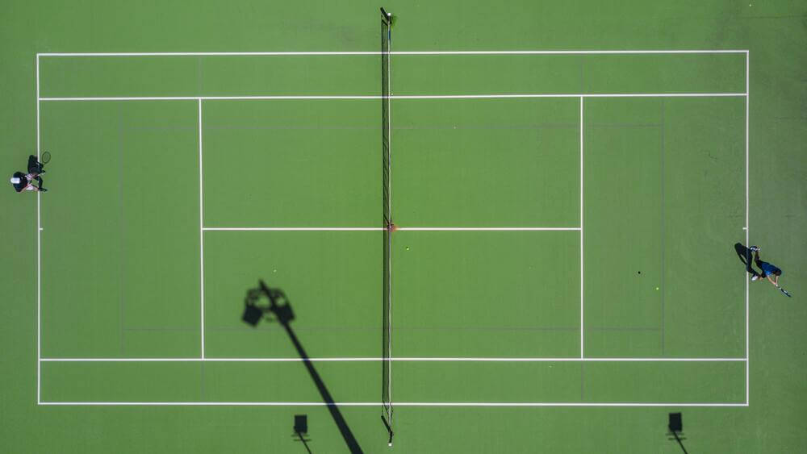

So, the emotion I felt in this match made me want to learn more about the sport and become a fan of it - tennis is not a very common sport around here in Brazil, especially because of all the resources you need to play. When I started to look more about what tennis was one of the first few things I did was to look for the Brazilian players and it was there that I started to cheer and watch Luisa's matches playing women's doubles

Another Brazilian player I started to watch was Beatriz playing singles (another Brazilian player that recently entered the top 10 of woman's tennis)
Just like I love to watch any Brazilian game, football for example, watching both of them became something that I enjoy